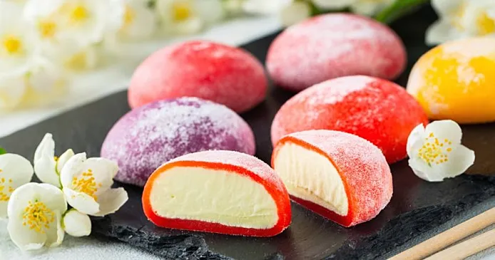

Mochi

Japanese type of rice dough. Mochi is made from glutinous rice pounded into a paste, which when pounded and soaked for a long time acquires a sweet taste. Ice cream or cream with berries is placed inside the mochi.
Japanese type of rice dough. Mochi is made from glutinous rice pounded into a paste, which when pounded and soaked for a long time acquires a sweet taste. Ice cream or cream with berries is placed inside the mochi.
The first Japanese restaurant to serve up a bowl of noodles similar to today's ramen was Yowaken 養和軒 in 1884, but it wasn't until 1910 that Japan had its first ramen shop called Rairaiken 来々軒 in Asakura, Tokyo. Then in 1947 Fukuoka, the now world famous Hakata tonkotsu Ramen was actually made by sheer mistake!

Dango is a tasty street food in Japan. Made from soft, yet springy ball-shaped rice dumplings on a skewer, dango comes in a couple of different common varieties. Matcha flavored, topped with a sweet and savory soy sauce glaze, smothered with chunky red bean paste, and plain white are all favorites of this sweet treat.
It is hypothesized that curry became popular in Japan because the Imperial Japanese Navy, modeled after the British Navy, adopted it as a menu item for its ship's mess, or because it was on the menu of the Imperial Japanese Army's mess hall.
onigiri is a rise tringle with fish insaide it.Samurai used to carry a small, bamboo, container of onigiri with them to enjoy as a quick meal during war times. Traditionally, Ume (pickled plum) was put inside of the rice balls. Most of the traditional filling was pickled or salted so the dish could be taken on long trips.